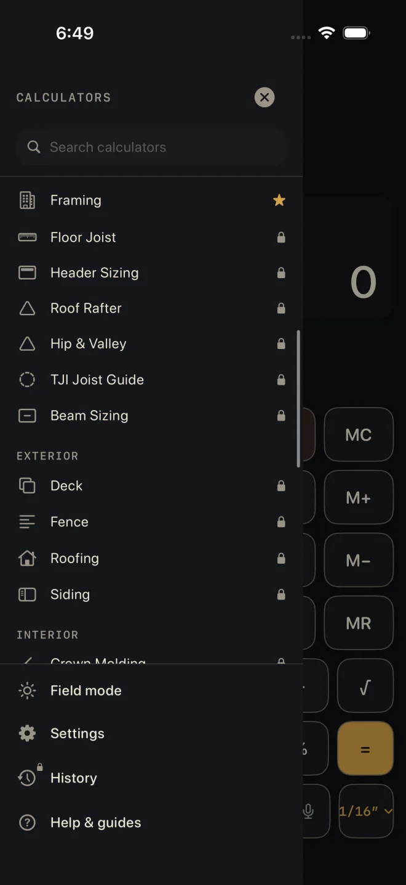

Finding a calculator
The app opens on the Dimensional Calculator. Every other calculator lives in a drawer that slides in from the left, with the ones you use most at the top.
Step by step
 2
3
4
5
2
3
4
5
- On the Dimensional Calculator, tap the menu icon at the top left, or swipe right from the left edge of the screen.
- To search, tap Search calculators and type part of a name. The list cuts down to the calculators whose names match. The small x clears the search.
- Tap a calculator to open it. The drawer closes and the calculator takes over the screen.
- To keep one handy, touch and hold its row and choose Add to Favourites. A gold star shows on the row from then on. Touch and hold again for Remove from Favourites.
- To close the drawer without choosing, tap the x at the top, tap the dimmed screen beside the drawer, or drag the drawer left.
The menu icon and the edge swipe are on the Dimensional Calculator only. From any other calculator, tap Back first. The Dimensional Calculator keeps your tape and the sum you were on while you are away.
What is in the list
- RECENT — the last five calculators you opened, newest first.
- FAVOURITES — the ones you starred, in the order you starred them.
- FLAGSHIP — the Dimensional Calculator. It is always here, so it cannot be starred and never shows under RECENT.
- The full list by trade: FOUNDATION, STRUCTURAL, EXTERIOR, INTERIOR, SPECIALTY, MEP.
The calculator you are in is highlighted. RECENT and FAVOURITES hide while you are searching and come back when the search box is empty. They do not appear at all until you have opened or starred something.
Locked calculators
A small padlock at the right of a row means that calculator is part of Pro. Tapping it closes the drawer and opens the Pro screen. Nothing else changes — the calculator is not opened and it is not added to RECENT. The guide for every calculator is free to read, locked or not.

1 2 3The rows at the bottom
- Field mode — tap to switch it on or off. ON shows beside it while it is on. Bigger keys and higher contrast for outdoors. The drawer stays open. See Field mode.
- Settings — opens Settings.
- History — results you saved from the calculators. It is a Pro feature; without Pro the icon carries a padlock and the screen offers the unlock. See Saving and history.
- Help & guides — opens these guides.
Common mistakes
- Swiping from the left edge inside another calculator and getting nothing. Go Back to the Dimensional Calculator first.
- Searching by what you are building instead of the calculator's name. Search looks at names only: "rafter" finds Roof Rafter, "birdsmouth" finds nothing.
- Looking for a star button. There is none — touch and hold the row.
- Looking for the Dimensional Calculator's tape under History. The tape opens from the strip above the display — see The tape and fixing a number.